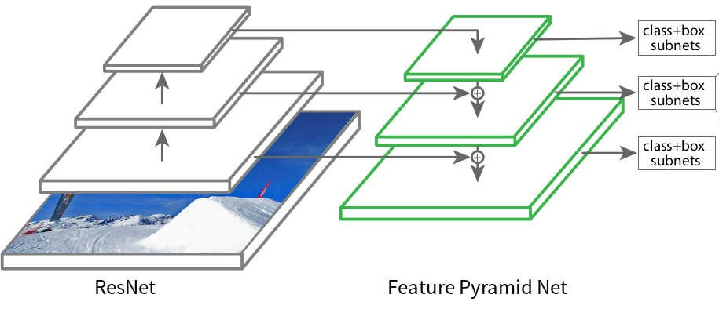

Backbones Network¶
This section listed all available backbone configuration. Part of model.name configurations (if the model support it) in experiment file.
Backbones refers to the network which takes as input the image and extracts the feature map upon which the rest of the network is based. Usually, a famous image classification network is used as a backbone for other computer vision tasks, such as object detection. For example we can see figure below :

In the figure, Resnet is used as a backbone in the Feature Pyramid Network (FPN) model for object detection. In Vortex, we provide various backbone that can be combined in different models.
Backbones params and MAC/FLOPS comparison ( to compare which backbones is the lightest or heaviest ) can be found on this spreadsheet link
NOTES :
- Params : total parameters in the model’s weight
- MAC / FLOPS : Multiply-Accumulate Operation divided by Floating Point Operations per Second
CSPNet¶
Variants from reference CSPNet: A New Backbone that can Enhance Learning Capability of CNN:
cspresnet50cspresnext50cspdarknet53
Darknet¶
Variants from reference YOLOv3: An Incremental Improvement:
darknet53
EfficientNet¶
The pretrained model for EfficientNet base model (b0 - l2) is trained using Noisy Student, except for b8.
Variants from reference EfficientNet: Rethinking Model Scaling for Convolutional Neural Networks :
efficientnet_b0efficientnet_b1efficientnet_b2efficientnet_b3efficientnet_b4efficientnet_b5efficientnet_b6efficientnet_b7efficientnet_b8
Variants from reference Self-training with Noisy Student improves ImageNet classification :
efficientnet_l2efficientnet_l2_475
Variants from reference EfficientNet-EdgeTPU: Creating Accelerator-Optimized Neural Networks with AutoML :
efficientnet_edge_sefficientnet_edge_mefficientnet_edge_l
Variants from reference Higher accuracy on vision models with EfficientNet-Lite :
efficientnet_lite0efficientnet_lite1efficientnet_lite2efficientnet_lite3efficientnet_lite4
MobileNet¶
Variants from reference MobileNetV2: Inverted Residuals and Linear Bottlenecks :
mobilenet_v2
Variants from reference Searching for MobileNetV3 :
mobilenetv3_large_075mobilenetv3_large_100mobilenetv3_large_minimal_100mobilenetv3_small_075mobilenetv3_small_100mobilenetv3_small_minimal_100mobilenetv3_rw
RegNet¶
Variants from reference Designing Network Design Spaces:
regnetx_002regnetx_004regnetx_006regnetx_008regnetx_016regnetx_032regnetx_040regnetx_064regnetx_080regnetx_120regnetx_160regnetx_320regnety_002regnety_004regnety_006regnety_008regnety_016regnety_032regnety_040regnety_064regnety_080regnety_120regnety_160regnety_320
ResNest¶
Variants from reference ResNeSt: Split-Attention Networks:
resnest14resnest26resnest50resnest101resnest200resnest269resnest50d_4s2x40dresnest50d_1s4x24d
ResNet¶
Variants from reference Deep Residual Learning for Image Recognition :
resnet18resnet34resnet50resnet101resnet152
Variants from reference Aggregated Residual Transformations for Deep Neural Networks :
resnext50_32x4dresnext101_32x8d
Variants from reference Wide Residual Networks :
wide_resnet50_2wide_resnet101_2
RexNet¶
Variants from reference ReXNet: Diminishing Representational Bottleneck on Convolutional Neural Network:
rexnet_100rexnet_130rexnet_150rexnet_200
ShuffleNet¶
Variants from reference ShuffleNet V2: Practical Guidelines for Efficient CNN Architecture Design :
shufflenetv2_x0.5shufflenetv2_x1.0shufflenetv2_x1.5shufflenetv2_x2.0
TResNet¶
Variants from reference TResNet: High Performance GPU-Dedicated Architecture:
tresnet_mtresnet_ltresnet_xltresnet_m_448tresnet_l_448tresnet_xl_448
VGG¶
Variants from reference Very Deep Convolutional Networks for Large-Scale Image Recognition :
vgg11vgg11_bnvgg13vgg13_bnvgg16vgg16_bnvgg19vgg19_bn